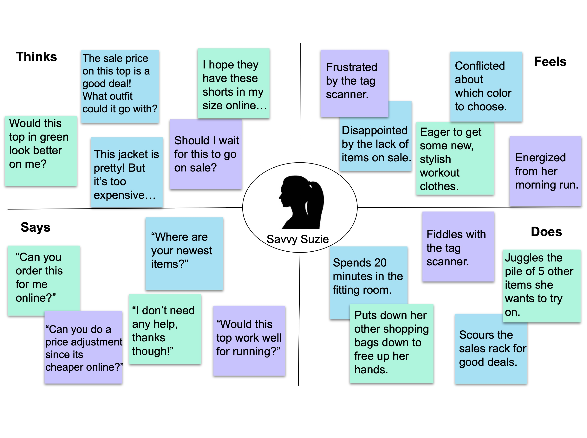
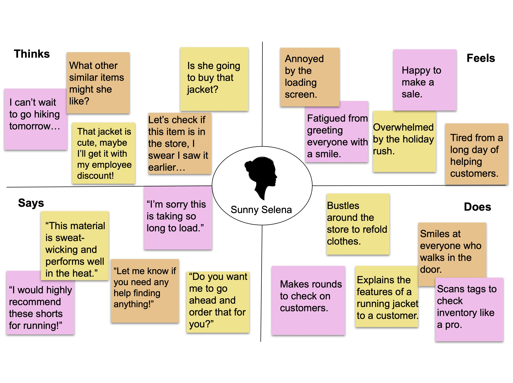
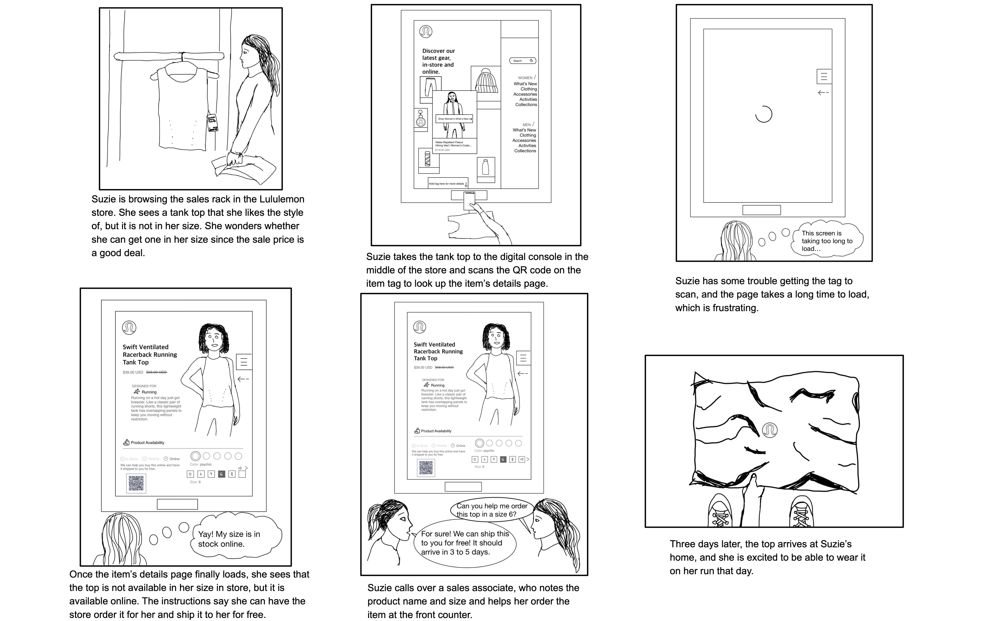

Personas and Storyboarding
Overview
An important part of UI/UX design is user research. Designers need to understand the behaviors, goals, skills, and attitudes of the people who will be using the products they design. One way that designer can "step into the shoes" of their users is by creating user personas, which are archetypical users whose characteristics and goals represent the needs of a larger group of users. In this project, my goal was to create two such personas and a storyboard mapping out a typical user's journey of using a product from start to finish.
I chose to observe shoppers at a Lululemon store and observed their interaction with a shopping console. The sketch above shows Lululemon’s interactive digital console found in their store. It allows users to scan product tags and bring up an item's description and view inventory availability of different colors and sizes in the store, nearby stores, and online. Users can also browse the item catalog and search for specific item names. I wanted to gain a deeper understanding of the kinds of users the interface targets, how users interact with the console, and any pain points that could be improved about the user experience.
User Observations
To get a sense of how users interacted with the console, I observed three users and took note of their reactions and patterns across their use. I also noted any frustrations or struggles they encountered while using it.
- There were two main types of users of the console: shoppers and sales associates. Shoppers who went to use the console themselves used it to find more information about a product or look at inventory information. Salespeople used the console to help shoppers find certain products. In both cases, they mainly used the console for inventory information.
- Shoppers who interacted with the console themselves mostly used it to scan an item tag. They did not do much browsing of the available items. They went to the console with an item in hand and scanned the item and looked at that product description page only.
- When salespeople interacted with the console, they used it to help shoppers find specific items. Similar to the shoppers who used the consoles themselves, they tended to first scan an item tag to check for available inventory in the store. They also scrolled through item descriptions to highlight different features of items for shoppers. Salespeople also used the search function to look up similar items to suggest.
- Shoppers had some difficulties using the tag scanner and expressed some frustration. Both shoppers and salespeople were occasionally frustrated by the screen’s tendency to get stuck loading.
User Interviews
After users finished using the console, I followed up with some interview questions to supplement my personal observations. Although observations typically match users' descriptions, sometimes observations and user perceptions can notably differ. It is also helpful to gain more insight into users' motivations and real-time thought process to shed more light on possible design improvements. The interview questions and a summary of user responses follow below.
Interview Questions
- What is your first impression of the digital console?
- Complete the sentence: “When I go to the item details page, I want to…”
- On the item details page, what information is most important to you?
- How easily were you able find the product you were looking for?
- What is your opinion of the tag scanner functionality?
- Is there anything you would like to change about the console functionality?
- How would you describe your overall experience using the console?
Response Summary
General Impressions:
- generally positive impressions and overall experiences
- users liked the simple, clean layout and visual appeal
- similarity of the interface to the Lululemon website was a positive
- easy to naivigate main menu
- users rated overall experiences positively as they were able to find products they wanted to buy
Use and Functionality:
- ability to check item inventory in different sizes and colors was most important to users
- the sales associate found the item tag scanner intuitive to use, while both shoppers expressed frustration about getting the scanner to work
- however, all users liked the tag scanner functionality to quickly find the item’s details page
- the sales associate also liked the ability to show users products from online that they might like that were not in the store
Potential Improvement Areas:
- the sales associate wished the number of items available in a particular size was displayed
- users also would have liked for similar items to be displayed at the bottom of a product page
- users mentioned annoyance about the console occasionally becoming stuck on a blank loading screen
- the scanner was unintuitive and glitchy
User Personas
I constructed two user personas based on trends I observed from the users I interviewed. Since there were two main types of users, I constructed a shopper persona and a sales associate persona. The personas are constructed from a combination of traits and behavior patterns observed from multiple users. As such, they do not represent real users but instead function as archetypes to help guide design decisions.
Savvy Suzie
Savvy Suzie is a professional woman in her mid-thirties who regularly shops at Lululemon. She loves running and likes to buy functional, stylish clothing for her workouts. She loves a good sale and is eager to find quality pieces she likes at the right price. Savvy Suzie represents the customer who shops regularly at Lululemon and is familiar with Lululemon’s products and sales strategies. She doesn’t need much help from sales associates, prefering to look items up herself on the console, and knows about the stores’ shared inventory system to take advantage of sales.
Sunny Selena
Sunny Selena is a woman in her mid-twenties who is a sales associate at Lululemon. She likes to do yoga and hiking and has many clothes from Lululemon which fit her active lifestyle. She always approaches customers with a bright attitude and cheery smile, and she enjoys helping customers find the gear that helps them perform their best. Selena finds the interactive console in store helpful for quickly scanning item tags and checking the inventory of products for customers, although she wishes it showed the number of items in stock. She also finds it useful for explaining technical features of clothing for different activities and for showing customers other products they might like. Selena represents a typical Lululemon sales associate who is eager to help out customers and share the feature of their favorite items.
Storyboard
After constructing the personas, I zeroed in on Suzie's interaction with the console to understand more about her specific needs and frustration points when using it. I based this interaction off of my observations of the shoppers who used the console and the struggles they encountered. I constructed a storyboard mapping out a typical interaction Suzie might have with the console from start to finish.
Summary
Personas are powerful tools for the design process. Future improvements to Lululemon's console can be guided by the personas of users who interact with it, keeping in mind the needs and behaviors specific to them. Personas and storyboards are essential for creating understanding and empathy with end users so that designs reflect the needs of the intended audience.